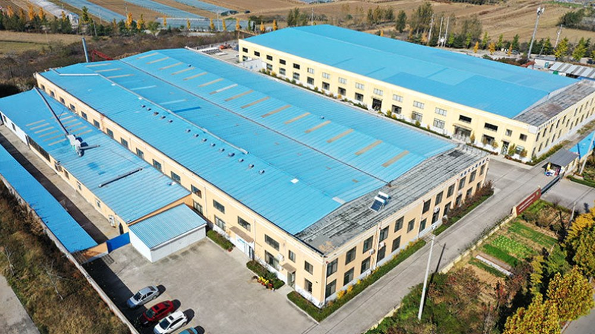
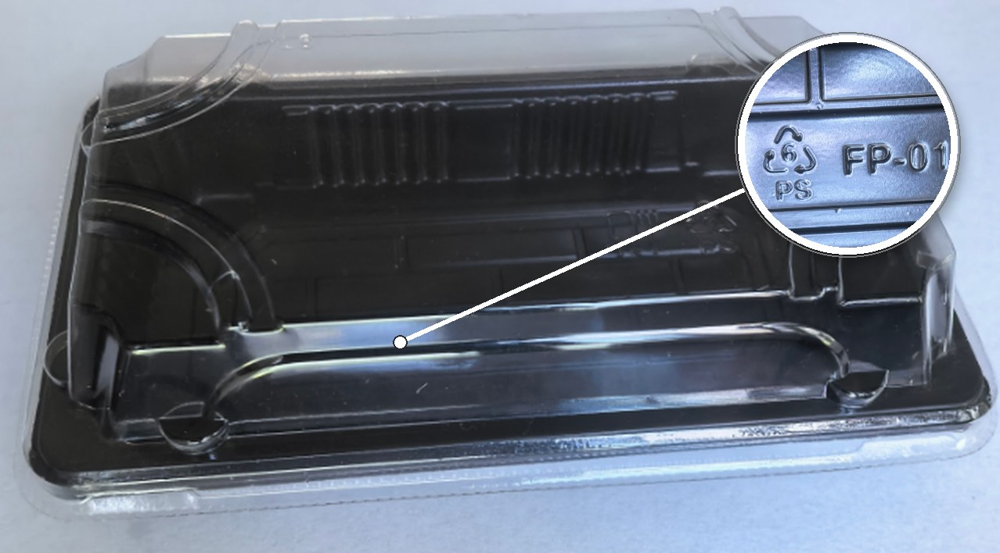
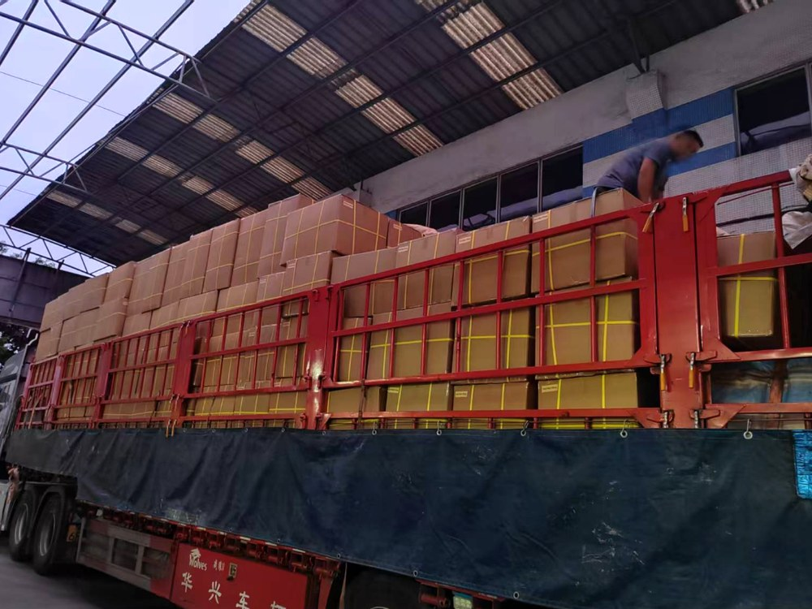
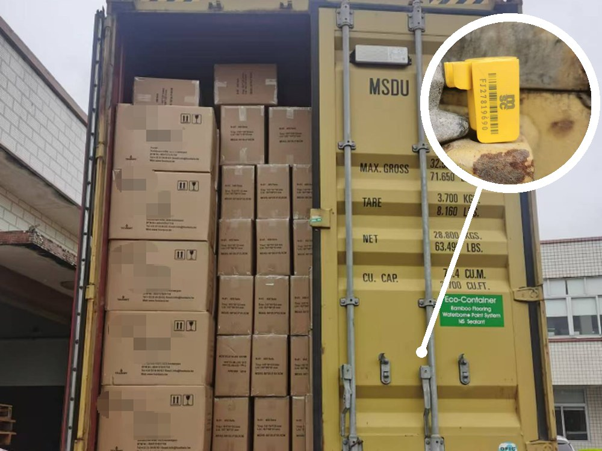

Shenzhen Food Packaging Manufacturer · Export to Spain, Belgium, Peru, Canada & Australia
We manufacture sushi boxes, lunch boxes, sauce cups and soup bowls in food-grade plastic and kraft paper, and supply PE soy sauce bottles in 15 ml and 30 ml from stock. Size, colour, structure and printing are customized to your spec on the moulded and paper ranges — sampling in 3–5 days.

Two material lines — food-grade plastic and eco-friendly kraft paper. The moulded and paper ranges are customizable in size, colour, structure and printing.
Food-safe materials, customization and dependable export execution — three reasons importers keep growing with us.
We customize size, thickness, colour and structure — from opening a new mould to printing a full roll of IML film. Your logo can be embossed into the tray wall, printed on IML film, or applied as a private-label sticker.
Trial orders accept a low MOQ, sampling takes 3–5 days, and ODM support covers developing your own product line end to end.
Start Your Custom Project
Every order passes incoming-material checks, in-line inspection and a final pre-shipment inspection. Key products are independently tested by SGS against US and EU food-contact standards — the certificates are shown below.
LFGB reports, kraft paper series results and heavy-metal screening are available on request — ask our team for the full test dossier.
A fixed, well-trained loading team and long-term partner fleet — every truck is stacked, strapped and sheeted so your goods arrive the way they left.


foodpack (Shenzhen Food Pack Technology Co., Ltd.) is a Shenzhen-based manufacturer of disposable food packaging for the overseas B2B market — sushi boxes, lunch boxes, sauce cups, soy sauce bottles and soup bowls. We supply distributors, restaurant chains and retail brands.
Operating since 2003, we run moulding, printing and assembly in one 5,000 m² factory in Shantou, Guangdong, with a daily output of 60,000 pieces — so quality and lead time stay under our control from the first sample to the finished cartons.
Talk to Our TeamOrdering, sampling, customization and compliance — the questions importers ask us most often. Select a topic to read the answers.
Key products are tested by SGS against US FDA 21 CFR 177.1640 and EU Regulation (EC) No 1935/2004 with (EU) No 10/2011 — all reports are Pass. LFGB reports for the paper series and heavy-metal screening are available on request.
Food-grade plastics: PS with clear OPS lids for sushi boxes and soup bowls, PS and BOPS for lunch boxes, PP for sauce cups, and PE for soy sauce bottles. The paper series uses grease-resistant kraft paper. Every batch passes incoming-material checks, in-line inspection and a pre-shipment inspection.
The kraft paper used in our sushi boxes, lunch boxes and soup bowls carries a food-contact grease-resistant coating, so it handles oily and hot food far better than uncoated paper. For very greasy items such as fried food, tell us the application and we will recommend the right grade and thickness.
Each grade is chosen for a different part of the product. PS forms the trays and soup bowls. OPS is used for the clear lids. BOPS is specified on lunch box trays. PP is injection-moulded into the sauce cups. PE is extruded into the soy sauce bottles. All five are food-grade plastics, and the mix is fixed per product so the tray, lid and bottle stay compatible on the filling line.
For oily or hot food the grease-resistant kraft series is the better choice — the kraft carries a food-contact grease-resistant coating. Dry and cold items such as sushi and cut fruit work well in PS trays with clear OPS lids. For fried food, tell us the application and we will recommend the right grade and thickness rather than guess.
The kraft paper series is tested under LFGB, and the reports are available on request together with heavy-metal screening and the full test dossier. The SGS reports published on this page cover the moulded range against FDA 21 CFR 177.1640 and EU 1935/2004 with (EU) No 10/2011 — both Pass.
Not every grade is rated for every condition, and we would rather confirm than guess. Tell us whether the container has to go in a microwave, a freezer or a conventional oven, and at what temperature and duration, and our team will specify a suitable grade and confirm it in writing before you place an order.
Yes. The eco-friendly paper series is the plastic-reduced line: grease-resistant kraft sushi boxes, lunch boxes and soup bowls, supplied with clear PET or kraft lids. It is aimed at retailers and restaurant groups phasing out bare plastic trays. Ask us for the recycling declaration and the material breakdown for each item.
Yes — OEM and ODM are both supported. We customize dimensions, cavity structure, thickness, colour and printing. Your logo can be embossed into the tray wall, printed on IML film, or applied as a private-label sticker.
MOQ depends on the mould and the print method. Trial orders are accepted at a low MOQ — send us the product spec and your target quantity and we will confirm the exact figure for each item.
Sampling takes 3–5 days. Send us drawings, reference samples or photos of the product you have in mind; our engineering team will quote the tooling cost before we start cutting tooling.
Send the product name, quantity and target market through the form below, or email foodpack@foodpackcn.com / WhatsApp +86 134 8079 1716. We reply with pricing and sample options within 24 hours.
We are a manufacturer. Shenzhen Food Pack Technology Co., Ltd. runs moulding, printing and assembly in its own factory in Shantou, Guangdong, and exports directly to distributors, restaurant chains and retail brands from its office in Bao'an District, Shenzhen.
We currently export to Spain, Belgium, Peru, Canada, Australia, Hong Kong SAR (China) and the Chinese domestic market. Documents such as packing lists, certificates of origin and inspection reports are prepared for every shipment.
Payment is by T/T bank transfer only — 30% deposit, 70% balance before shipment. We quote FOB Yantian, and loading is handled by a fixed, trained team with a long-term partner fleet. Full bank details are issued with your proforma invoice.
Our factory in Shantou, Guangdong runs at 60,000 pieces per day across moulding, printing and assembly. Repeat programs are scheduled against that figure — send us your target quantity and quantity split and we will confirm the production schedule before you place the order.
Shenzhen Food Pack Technology Co., Ltd. has been manufacturing disposable food packaging since 2003 and occupies a 5,000 m² factory site in Shantou, Guangdong. Moulding, printing and assembly all run on site, so you can audit the line in person before ordering.
Tell us the product, quantity and target market. We reply with a quote and sample options within 24 hours.
Currently exporting to: Spain · Belgium · Peru · Canada · Australia · Hong Kong SAR, China · and the Chinese domestic market.